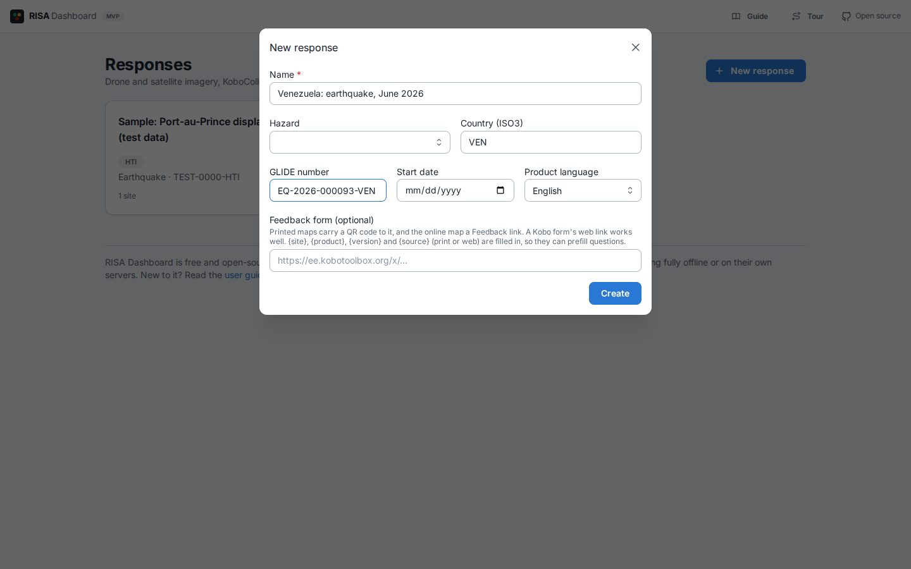
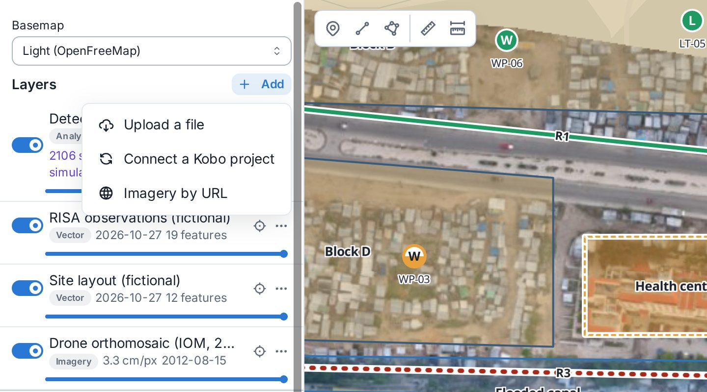
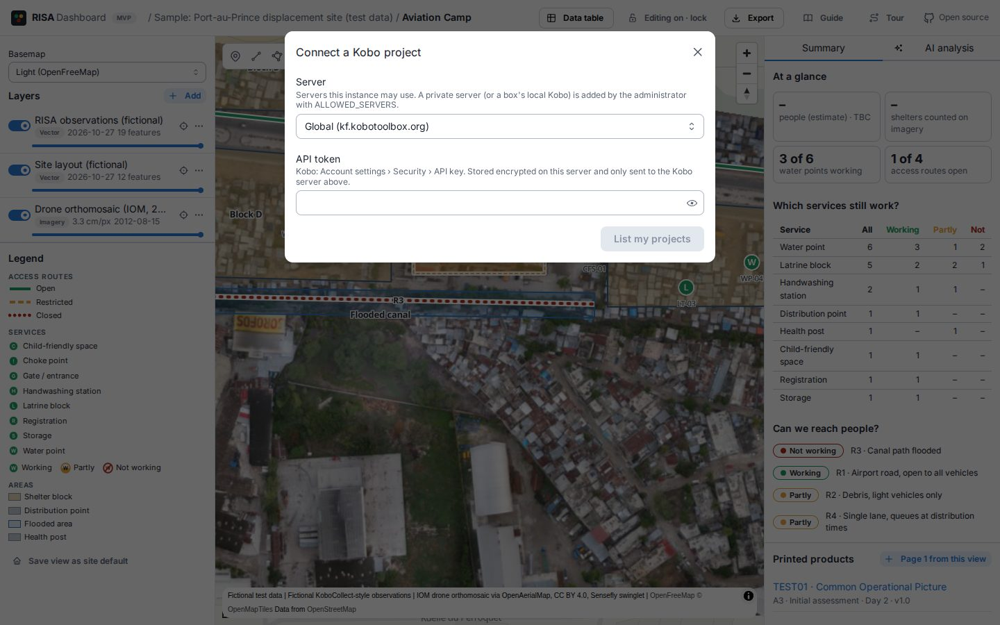
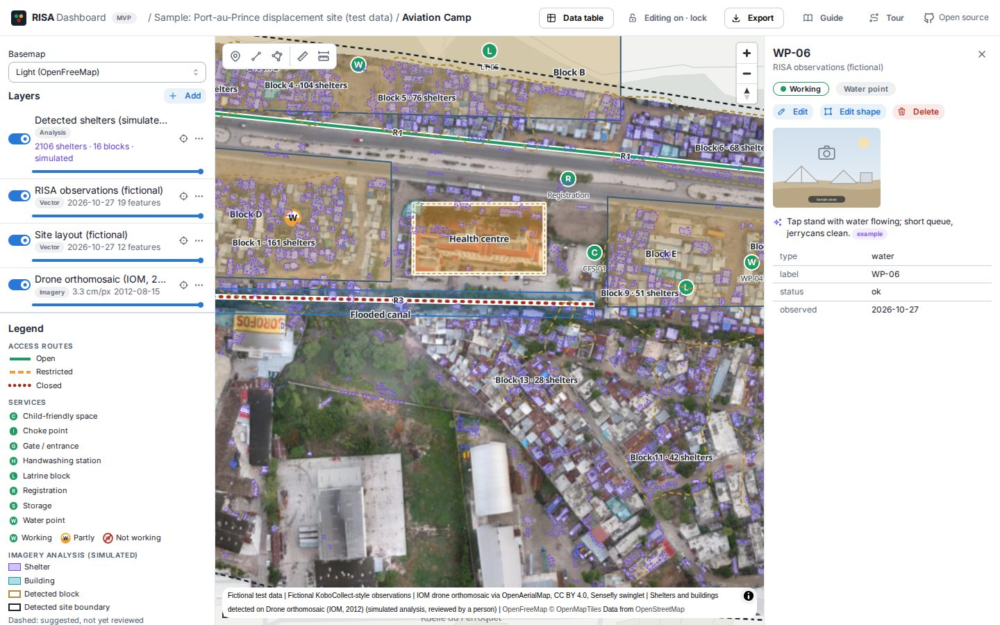
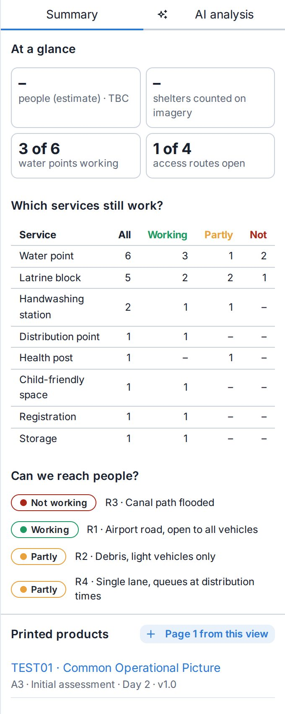
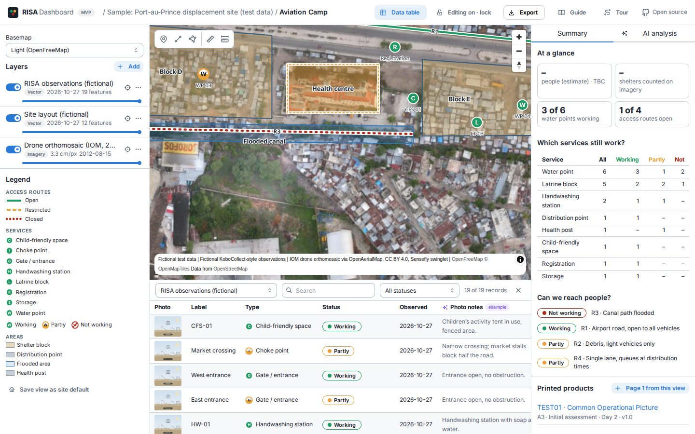
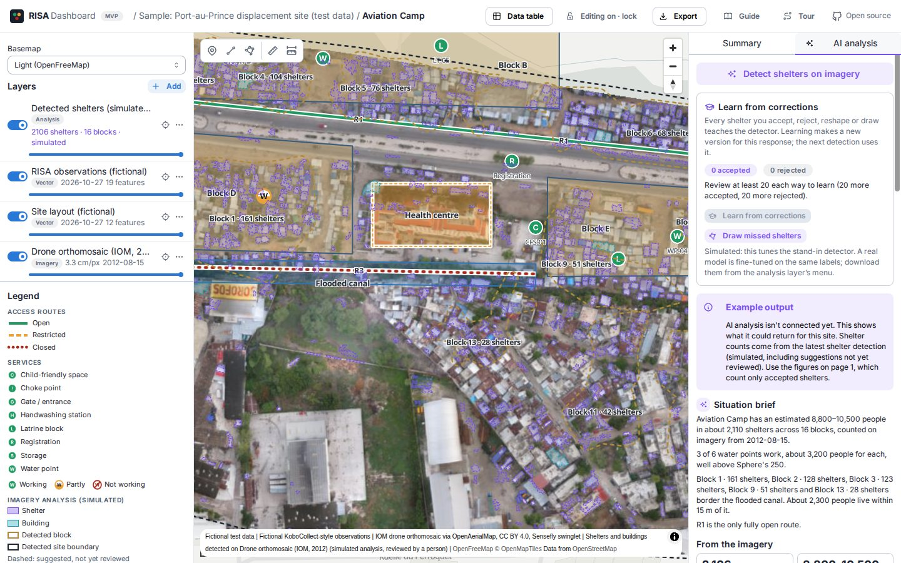
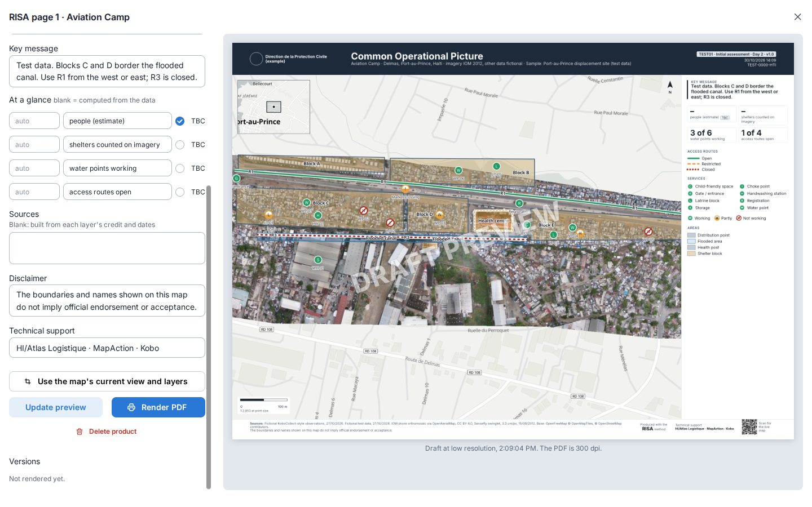

How it works
A RISA (Rapid Infrastructure and Service Assessment) team needs three things fast: a current picture of a site, answers to two questions (Can we reach people? and Which services still work?), and a printed map that decision makers can act on. The dashboard does most of the assembly, so the team can spend its time in the field rather than in GIS software.
- ImageryDrone orthomosaics and satellite scenes of any size, uploaded once and shown sharp at every zoom, with no tile server.
- Field observationsA KoboCollect project on KoboToolbox (global, EU, a national server or a field kit), synced every 10 minutes, with photos.
- RISA symbolsServices, routes, shelters and hazards in RISA's standard symbols, each status shown twice: by colour and by line or shape.
- Page 1The Common Operational Picture at A3 or A4: map, key message, figures, legend, sources and QR codes, rendered at 300 dpi.
- Free and open sourceAGPL-3.0, like KoboToolbox, built only on open-source software and open formats. No licence fees, no vendor accounts, no lock-in.
- Runs where your data must stayOn the consortium's instance, self-hosted on your own server, fully offline on a field kit, or (planned) as a network of kits with a hub.
Everything belongs to a response (an emergency, such as "Venezuela: earthquake, June 2026"), and each response has sites. A site has its own map, layers, figures and printed products.
This is the MVP. The map, imagery, Kobo, drawing, measuring, page 1, the locator maps and exports work. The imagery analysis (shelter detection) is simulated, a stand-in for a real model, and the analysis tab shows example output. Embedding the map in other websites is planned. Pages 2 and 3 of the RISA product are still to come.
Where it runs
The RISA Dashboard is free and open-source software. The same software runs in four ways, and the organisation responsible for a response's data chooses which:
| Way to run it | Where the data is | Internet | Status |
|---|---|---|---|
| The consortium's instance | risa-dash.kobolabs.dev, in a data centre in Frankfurt (EU) | Needed | Running |
| Self-hosted | A national authority's or an organisation's own server or cloud account, in the country if required | Only for its users to reach it | Built |
| Offline on a field kit | A Kobo in a box kit, next to its own KoboToolbox, in the team's hands | None | Built, not yet tried on a kit |
| Federated | A kit per site and a hub at base, then the cloud or a national server, only for what the focal point chooses to send | None between kits | Planned |
Choosing in an emergency
- Start fast: the consortium's instance needs nothing set up, so it suits the first hours when the data may be held in the EU.
- Data must stay in the country, or with the national authority: use its own instance, or a field kit. Ask the consortium if you need help setting one up.
- No reliable internet, or data too sensitive to put online: use a field kit. Everything in this guide works on it.
- Changing later is possible: export the data in open formats and add it to the other instance. Moving a whole response as one file is planned.
Why open source matters here
- Anyone can run it. The licence is AGPL-3.0, like KoboToolbox. A national authority, an NGO or a university can run its own copy with no licence fee and no permission needed.
- Built on open components only: Django, PostgreSQL and PostGIS, GDAL, MapLibre, Typst, Chromium and KoboToolbox. The planned AI uses open-weight models. Nothing depends on a commercial service.
- Open formats in and out: GeoTIFF, GeoPackage, GeoJSON, Shapefile, KML and PDF. Your data goes to QGIS, ArcGIS or another instance at any time.
- Improvements are shared. Anyone who offers a changed version as a service must publish the changes, so what one team adds comes back to everyone.
- It can be checked. The source code is public, so anyone can see exactly what the software does with data.
To run your own, the README on GitHub covers self-hosting with Docker and the settings for an offline kit.
Getting started
Open the dashboard
Open the address your team uses:
- The consortium's instance:
https://risa-dash.kobolabs.dev. - A national authority's own server: the address they give you.
- A field kit (Kobo in a box): join the kit's Wi-Fi and open
risa.kobo.local. It needs no internet.
The home page lists the responses. Open the sample response to try everything on real drone imagery with test data before you need it. Each page has a short tour that starts the first time you open it; run it again with Tour at the top.
Create a response
- On the home page, choose New response.
- Give it a name people will recognise (for example Venezuela: earthquake, June 2026), the hazard, the country's three-letter code (
VEN), the GLIDE number if there is one, and the start date. - Choose the product language. Page 1's headings and legend follow it: English, Spanish or French. Portuguese uses the English headings for now. Everything you type on the page can be in any language.
- If your team has a feedback form, paste its link (see Page 1). You can add one later.
- Some instances need a create key to start a response. Ask whoever runs the instance.


Keep the edit key safe
When the response is created, the dashboard shows its edit key once. Copy it and put it where your team keeps shared credentials. It's saved in the browser you used, but nowhere you can look it up again.
- Viewing is open to anyone with the link, so you can send the site's address to partners straight away. Links aren't listed by search engines.
- Editing (adding sites, uploading, connecting Kobo, drawing, reviewing and printing) needs the key. On another computer, choose Unlock editing and paste it.
- If the key leaks or is lost, the instance's administrator can issue a new one.
Anyone with the edit key can change or delete the response's data. Share it with the people producing the maps, not with everyone who reads them.
Add a site
Open the response and choose New site. Give it its local name, the place, its kind (camp or displacement site, collective centre, informal settlement) and, if you have it, a latitude and longitude. Without a location, the map zooms to the first imagery or data you add.
Imagery
Imagery is the base of a RISA map: a drone orthomosaic flown on the day, or a satellite scene of the area. In the site's Layers panel, choose Add.


Upload a drone orthomosaic or satellite scene
- Choose Upload a file and pick the GeoTIFF exported from WebODM, DroneDeploy, Pix4D, DJI Terra or your satellite provider.
- Fill in the date it was captured and the source (for example Drone orthomosaic, DJI Mini 4 Pro, 120 m AGL). Both go into page 1's sources, so fill them in now.
- The upload goes in 8 MB parts and retries by itself if the connection drops; keep the page open until it finishes. Files up to 8 GB work.
- The server then converts it for the web, which takes a few minutes for a large orthomosaic. The black or white border round a drone image is made transparent. The layer shows when it's ready.
Over a slow or metered link, don't upload multi-gigabyte imagery through the internet: upload it on the field kit over its Wi-Fi or by cable, and send only page 1 and the GeoPackage out (see Offline and low bandwidth).
Imagery by URL
When you're online, Imagery by URL adds a scene without downloading it: an XYZ tile address (such as OpenAerialMap), a WMS service, or a Cloud-Optimised GeoTIFF (for example from Maxar Open Data or Copernicus EMS). Add the credit and capture date, as for an upload.
Working with layers
- Turn a layer on and off with its switch, and fade it with the slider under it.
- The ⋯ menu moves a layer up or down, renames it, downloads it, or deletes it. Zoom to layer (the target icon) frames it.
- Basemap, at the top, picks the map behind everything: online basemaps when connected, or the offline extracts loaded on a kit.
Field data from Kobo
Teams record observations with KoboCollect: a water point, its status, a photo, where it is. The dashboard reads them straight from KoboToolbox, so a new submission is on the map within minutes.
Connect a project
- In Layers, choose Add › Connect a Kobo project.
- Choose the server: the global or EU KoboToolbox server, or another one the instance allows (a national server, or
http://kf.kobo.localon a kit). The administrator adds other servers. - Paste an API token: in KoboToolbox, Account settings › Security › API key. Use an account that can view the project's data, ideally one made for the dashboard rather than a person's.
- Pick the project. Its points come from the form's first location question.


Map the form to RISA
The dashboard guesses which questions give the type (water point, latrine block, health post…) and the status, from the question names and choices, in English, Spanish or French. Check its guess with ⋯ › Map form to RISA:
- the location question, the type and status questions, and the label to show;
- which answer means which RISA type and status. An answer that isn't mapped shows as Not assessed (grey), never as a status;
- Left out (sensitive): questions that must never be copied onto this server, such as names or phone numbers.
Syncing
The dashboard checks for new submissions every 10 minutes. After a team comes back into range, use ⋯ › Sync now to bring them in straight away. If a sync fails (an expired token, a deleted form), the layer shows sync error; hover over it to see why.
Other layers
Partners often bring their own data: a site plan from site management, a flood extent, routes digitised in QGIS. Upload a file takes:
- GeoJSON, GeoPackage, a zipped Shapefile, KML or KMZ, or a CSV with latitude and longitude columns.
- Columns called
type,statusandlabel(or their Spanish and French equivalents) are matched to RISA's types and statuses, so the features get RISA symbols.
Give each layer a source and date. They become page 1's sources line.
The map
RISA symbols and statuses
Status is always shown twice, by colour and by line or shape, so the map still reads in black and white, on a bad screen, or for colour-blind readers.
| Status | Routes | Services | Means |
|---|---|---|---|
| Working | Solid line | Filled symbol | Open, or working normally |
| Partly | Dashed line | Half-filled symbol | Restricted or partly working: light vehicles only, queues, broken taps |
| Not working | Dotted line | Crossed-out symbol | Closed or not working |
| Not assessed | Grey | Outline only | No status recorded yet |
These colours are reserved for status; nothing else on the map uses them. The legend is built from what's on the map, and page 1 uses the same one.
Look at a feature
Click any point, line or area to see its type, status, label, the Kobo answers behind it and its photos.


Draw and measure
The tools at the top left of the map draw points, lines and areas. Give each a RISA type, a status and a label: a closed route, a flooded area, a shelter block, a distribution point the form missed. Select a drawn feature to change it, reshape it or delete it. Drawing needs the edit key; anyone can measure a distance or an area.
Once the map shows the site well, Save view as site default (at the bottom of the left panel) makes everyone open it there.
Figures and the data table
The summary


The Summary tab on the right answers the RISA questions from the data on the map:
- At a glance: people (an estimate, marked TBC), shelters counted on imagery, water points working, access routes open. These go onto page 1.
- Which services still work? Each service type, by status.
- Can we reach people? Each access route, its status and note.
A figure with no data behind it shows a dash. Shelters counted on imagery counts shelters drawn by hand and detected shelters a person has accepted; suggestions waiting for review don't count.
The data table
Data table, at the top, opens every record of a Kobo or vector layer under the map, with its photos, a search box and a status filter. Click a row to frame the feature on the map. It's the quickest way to check what came in from the field before you print.


Imagery analysis
The detector is simulated for now. It uses simple colour rules on the real imagery and stands in for a real model, so the review workflow can be tried and improved. Don't report its counts as findings.
Counting shelters on an orthomosaic by hand takes hours. In the AI analysis tab, Detect shelters on imagery finds shelters and buildings in the current view or the whole image, groups shelters into blocks and outlines the site.
- Every result is a suggestion, drawn dashed until a person accepts it. Accept or reject one at a time, or use ⋯ › Review by confidence… to accept or reject everything above or below a level.
- Re-tag or reshape a suggestion like a drawn feature, and use Draw missed shelters for any it missed.
- Only accepted shelters count in the figures and on page 1.
- Learn from corrections: each accept, reject, reshape and missed shelter is kept. After 20 reviews each way, it trains a detector version for this response and reports its accuracy on reviews it didn't train on. Download training data exports the imagery and labels for training a real model.


RISA page 1
Page 1 is the Common Operational Picture: one landscape page that a site manager, a cluster coordinator or a national authority can read in a minute.
Make it
- Turn on the layers you want and frame the site on the map.
- In Printed products (under the summary), choose Page 1 from this view.
- Fill in the page:
- A3 or A4;
- Title, Map code and Version (for example Initial assessment · Day 4 · v1.0);
- Leading authority, shown first in the header (RISA is credited as the method);
- the Key message: one or two sentences on what matters most, such as Blocks B1 and B2 are flooded. Use R1 (light vehicles) or R3.;
- At a glance: the four figures, filled in from the data. Change any of them by hand, and tick TBC for an estimate;
- Sources (leave blank to build them from each layer's credit and date), the Disclaimer and Technical support;
- optional locator maps: the area round the site, and a country overview joined to it, on the map's corner or at the top of the side panel.
- Update preview shows a draft of the page. If you move the map, Use the map's current view and layers takes the new frame.
- Render PDF. The server makes the page at 300 dpi; an A3 is about 1.4 MB, small enough for WhatsApp or email.


Versions and QR codes
- Every render is kept as a version. Change the version label for each update, so readers can tell an old print from a new one.
- The page's QR code opens the live map, so someone holding an old print can see today's situation.
- When the response has a feedback form, a second QR code and the Feedback button online open it. A KoboToolbox web form works well, and on a kit it's the kit's own Kobo. The link can carry
{site},{product},{version}and{source}(print or web) to prefill questions, so you know which map a comment is about. Set it on the response page with Feedback form.
Offline and low bandwidth
RISA teams often work where there's no reliable internet. The dashboard runs on a Kobo in a box field kit, next to KoboToolbox, with nothing reaching the internet:
- Phones and laptops join the kit's Wi-Fi. KoboCollect sends submissions to the kit's Kobo (
http://kc.kobo.local), and the dashboard (risa.kobo.local) reads them from there. - Imagery goes onto the kit by cable or over its Wi-Fi, so gigabytes never cross a satellite link.
- Basemaps are offline extracts of the response area, loaded before the kit leaves.
- This guide, the fonts and the tours are on the kit too.
Several kits will be able to work together (planned): a kit at each site, a hub at base that shows the whole response, still offline, and the cloud or a national server only when there's a link and the focal point chooses to send.
On a thin link, send the small things first: page 1 (about 1.4 MB), then the GeoPackage (usually 5–50 MB). Full imagery travels by USB drive or courier, or waits for a good connection.
One gap today: the labels on the map's basemap (place and street names) still need an internet connection. The imagery, your data and the printed page don't.
Response checklist
What to do, in order, so that page 1 goes out within the hour once the imagery and observations are in.
Before you deploy
- Agree with the data owner where the data may live and who may see the map. That decides the instance: the consortium's, a national authority's own, or a field kit (see Where it runs). Get its create key if it needs one.
- Deploy the RISA form in KoboToolbox, and make an API token for an account that can see its data.
- For a kit: load the offline basemap of the area and any pre-event imagery before it leaves, and check that it opens with the internet off.
- Decide on the feedback form and test its link.
- Run through the sample response once, so the first real page 1 isn't the first page 1.
On day one
- Create the response and save the edit key where the team can find it.
- Add the site, with its location if you have one.
- Upload the orthomosaic, or add satellite imagery by URL, with its capture date and source.
- Connect the Kobo project and check Map form to RISA: types and statuses right, sensitive questions left out.
- Draw what the form doesn't cover: the site boundary, blocks, routes and their status, flooded areas.
- Check the data table and the summary. Do the figures make sense?
- Make page 1: frame, key message, figures (TBC where estimated), version label. Render it.
- Send the PDF and the site link, and note the version you sent.
For each update
- Sync the Kobo layer, and add new imagery as a new layer with its date.
- Update route and service statuses, and the key message.
- Change the version label (Day 5 · v1.1) and render a new version. The QR code always opens the latest.
- Read the feedback that came in and fix what's wrong on the map.
Data protection and data sovereignty
RISA records infrastructure and services, not people. But imagery of a displacement site, and a map of where its water, latrines and access routes are, can still put people at risk if it reaches the wrong hands. Treat every response's imagery and map as sensitive.
Who controls the data
The organisation or national authority that sets up a response controls its data, and decides where it lives and who it's shared with. The field observations stay in its own Kobo project; the dashboard keeps a working copy of the points and answers it puts on the map, and nothing else.
Where it lives
- On a field kit, nothing leaves the kit unless your team copies or syncs it.
- On a self-hosted instance, the data is wherever that organisation runs it.
- On the consortium's instance, the database and files are with DigitalOcean in Frankfurt (EU). Imagery is delivered through DigitalOcean's content network, and the site is behind Cloudflare, which handles its traffic and security. If a response's data must not leave a country, use a national instance or a kit instead.
What the dashboard keeps, and what it doesn't
- No personal accounts, no tracking, no analytics. Your browser keeps only the edit key, your layer and basemap choices for each site, and which tours you've seen. The edit key is stored on the server only as a hash.
- Sensitive questions are left out. When you connect a Kobo project, list any question about a person (names, phone numbers, ages) under Left out (sensitive). Those answers are never copied to the dashboard.
- Kobo tokens are stored encrypted and sent only to their own Kobo server; they never reach a browser. Photos are fetched from Kobo when someone opens them, not stored in the dashboard.
- No AI company sees your data. The imagery analysis is simulated today and sends nothing anywhere. The planned models run on the kit, the hub, or a server rented from the same provider in the same region as the instance.
- Feedback goes into a Kobo form that the response's owner chooses, under their control.
Who can see it
- Anyone with a site's link can view it, so you can share the map in the first hours. Links aren't listed by search engines.
- An instance can require the edit key for viewing too (set by its administrator), and can hide a response from the home page list.
- Imagery files and printed pages are served at long, unguessable addresses. Anyone who has one of those addresses can open the file, even if viewing needs the key. For the most sensitive responses, a national instance or a kit keeps even that inside your own network.
- Only people with the edit key can change anything. Share it with the people producing the maps, not with everyone who reads them.
What reaches other services online
The online basemaps (OpenFreeMap, Esri satellite imagery and OpenStreetMap) are loaded by each viewer's browser, so the basemap provider sees the request and the area of the map being viewed. The map's label fonts also come from OpenFreeMap today. To avoid this, choose an offline basemap or No basemap; an instance's administrator can turn the online basemaps off altogether. On a kit, none of this applies.
Good practice for teams
- Agree with the data owner, before deploying, which instance to use and who the map may be shared with. A data-sharing agreement and, for drone imagery of sites, a protection review should come before anything is shared widely.
- Mark every question about a person as sensitive when you connect Kobo, and check the data table for anything personal that slipped into a label or a note.
- Check photos for faces, documents and number plates before you share the site's link widely.
- Keep the key message and labels to facts about places and services, never about individuals.
- Delete layers you no longer need. Deleting a layer removes its files too; a whole response is removed by the instance's administrator.
- Moving data on a USB drive? Treat the drive as sensitive. Encrypted transfer files are planned, so a lost drive exposes nothing.
These practices follow the IASC Operational Guidance on Data Responsibility in Humanitarian Action: collect only what's needed, keep control with the responsible organisation, and share deliberately.
Questions
My orthomosaic doesn't show.
A large file takes a few minutes to convert after the upload finishes. If the layer says failed, hover over it for the reason. The usual causes are a file with no georeferencing (export it as a GeoTIFF, not a plain TIFF or JPEG) or an incomplete upload. An upload retries each part by itself while the connection comes and goes; if the page was closed or the computer slept, start the upload again.
Kobo points are missing or in the wrong place.
Use Sync now, then check Map form to RISA: the location question must be the one with the point, and a submission without a location can't go on the map. Points far away often have latitude and longitude swapped, or were recorded before the GPS had a fix.
Everything from Kobo is grey.
Grey means Not assessed: the status question isn't mapped, or its answers aren't. Open Map form to RISA and match each answer to a status.
I can't edit anything.
Choose Unlock editing and paste the response's edit key. Ask whoever created the response. It's kept in the browser, so a private window or a cleared browser needs it again.
Can we print in Spanish or French?
Yes. Set the response's product language, and page 1's headings and legend follow it. Titles, the key message and sources are whatever you type.
Can we show the map on our own dashboard or on the Virtual OSOCC?
Not yet. An embed view is planned, which a response's focal point will turn on (see Share and export). For now, post the site's link, which opens the live map for anyone, and attach the latest page 1 PDF.
Can we work on the map in QGIS?
Yes. Export › GeoPackage gives every vector layer, and Download COG the imagery. Edited layers come back in with Upload a file.
Can we run our own copy?
Yes, with no licence fee and no permission needed. It's free and open-source software (AGPL-3.0, like KoboToolbox), built only on open-source components. It runs on a national authority's own server, in any cloud account, or fully offline on a field kit. The source code and self-hosting guide are on GitHub.
Does our data leave the country?
Only if you use an instance outside it. On the consortium's instance, data is held in Frankfurt (EU). On a national instance it stays where that server is, and on a field kit it stays on the kit. See Where it runs.
Is any of our data sent to an AI company?
No. The imagery analysis is simulated today and runs on the dashboard's own server. The planned models are open-weight models on the kit, the hub, or a server from the same provider and region as the instance.
Are we locked in to the consortium's instance?
No. Export the data as a GeoPackage and the imagery as GeoTIFF, and add them to your own instance or to QGIS or ArcGIS. Moving a whole response as one file is planned.
Where do I get help with KoboToolbox itself?
The KoboToolbox Help Center and the community forum. On a field kit, the KoboToolbox user guide is on the kit's home page at kobo.local.